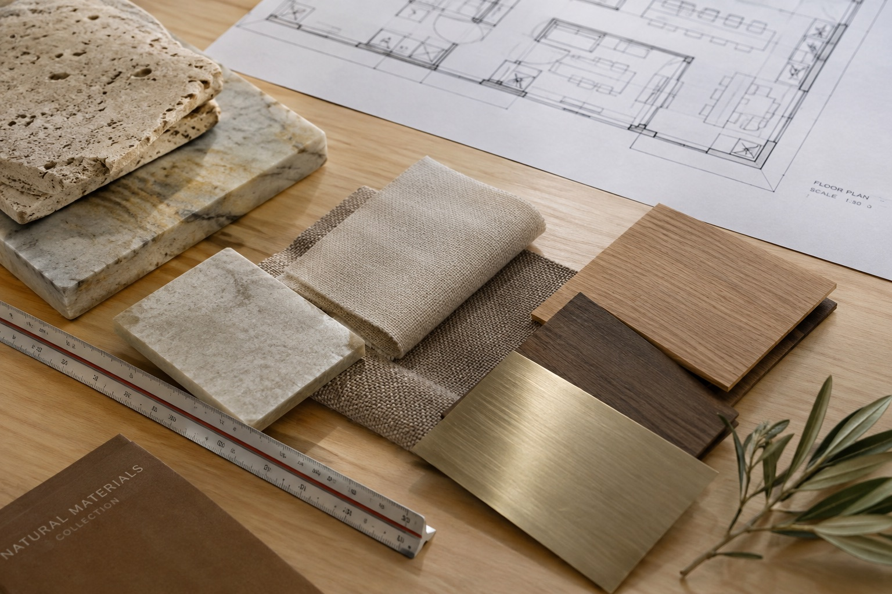

Sobre nós
La.rú é Laís e Rúbia.
Duas trajetórias distintas que encontraram, na complementaridade de suas experiências, a base para um trabalho autoral, cuidadoso e duradouro.
A história da La.rú começa com a união de duas profissionais que compartilhavam a mesma visão sobre a forma de conduzir projetos, relacionamentos e decisões dentro da arquitetura. Ao longo de suas trajetórias, Laís e Rúbia perceberam que o mercado valorizava não apenas boas soluções técnicas, mas a capacidade de oferecer segurança, organização e clareza durante todo o processo.
Nascida em São Paulo, a empresa nunca se limitou a desenvolver ambientes esteticamente bem resolvidos. Desde os primeiros projetos, o objetivo foi estruturar uma experiência completa: reduzir complexidades, coordenar etapas e conduzir cada demanda com atenção aos detalhes que fazem diferença na rotina dos clientes.
O nome sintetiza essa união — as iniciais de Laís e Rúbia transformadas no símbolo da parceria que sustenta a empresa desde a fundação.
